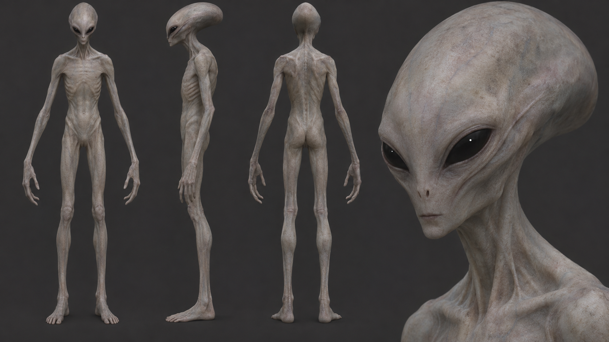
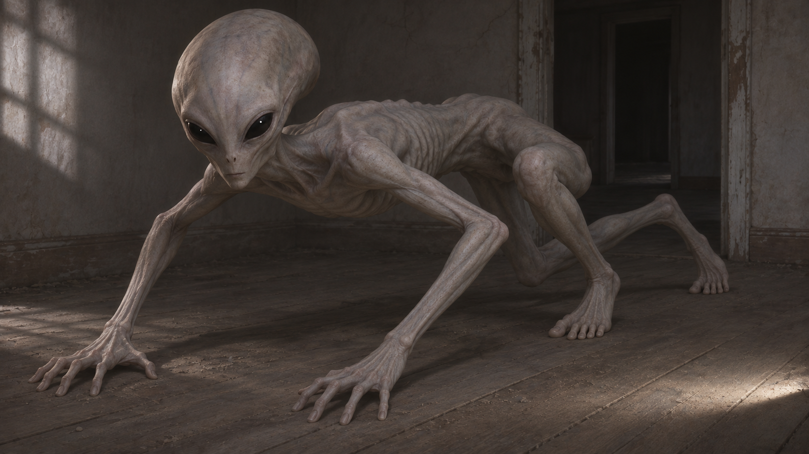
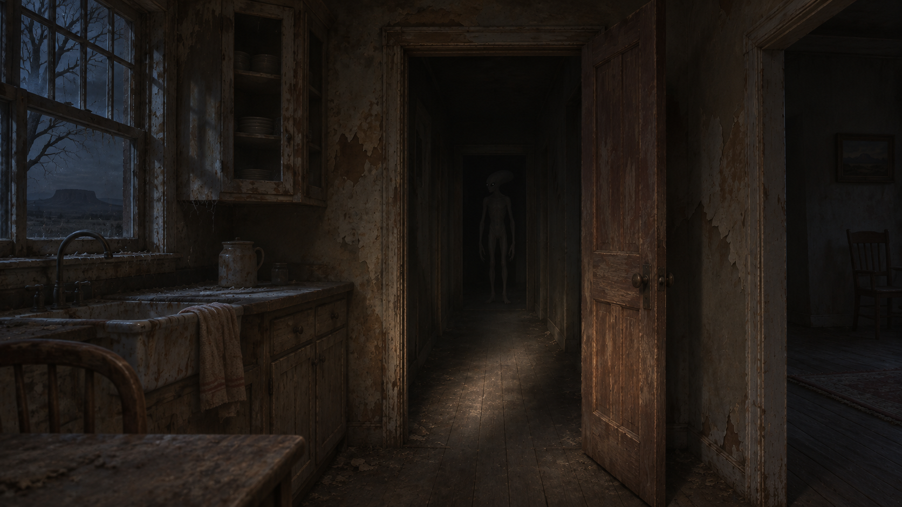

SIGNAL / 47 — Pale
Konseptforslag · 6. november 2026 · Original figurretning, ikke godkjent modell eller runtime-bilder.

Modellark – stående Pale
Krabbende positur
Gårdshus – tilstedeværelse og øyeglimtVidere modellering må avklare håndanatomi, proporsjoner og rigg. Krabbing er et bevegelsesforslag; ingen ny fienderegel er vedtatt.